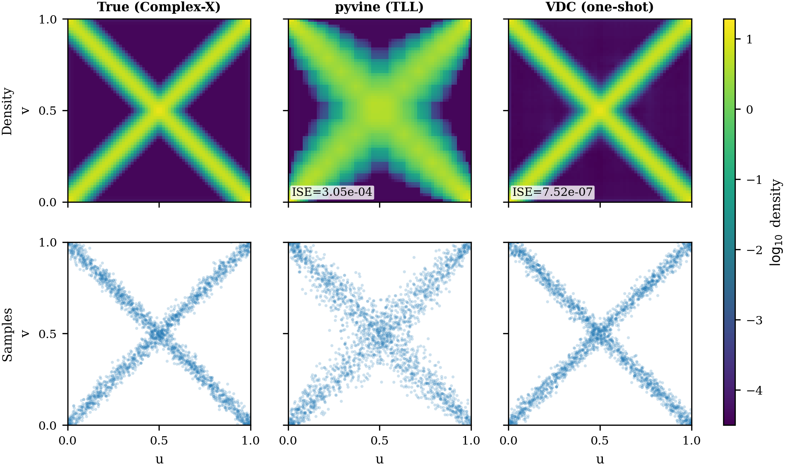
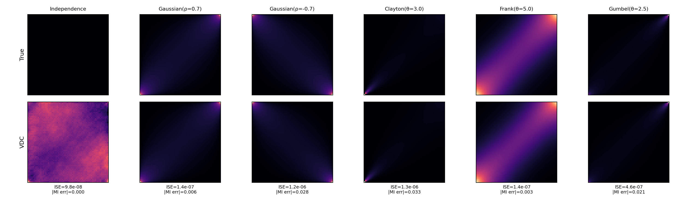
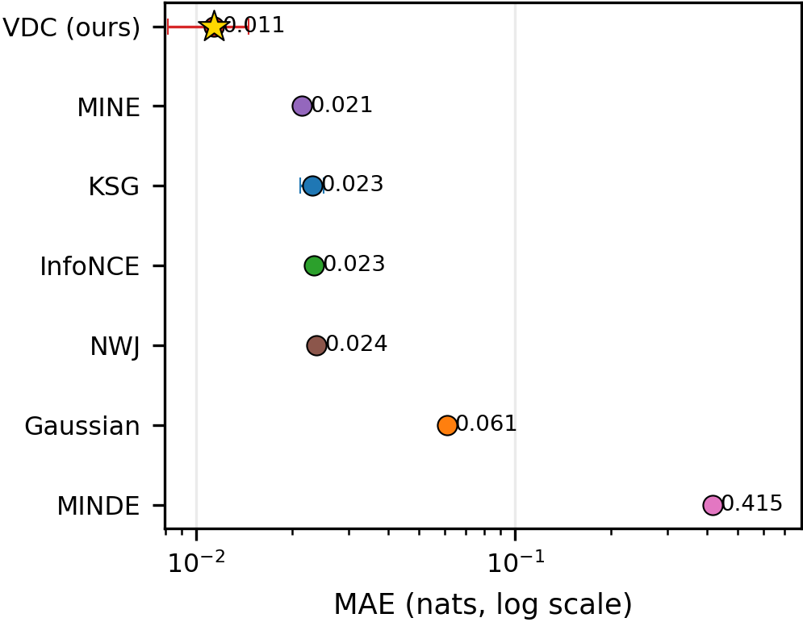
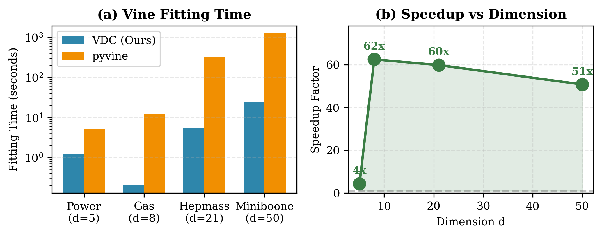

Reproducibility
Quick Commands
python scripts/download_pretrained.py --list
python scripts/download_pretrained.py --model-id vdc-denoiser-m64-v1
python examples/use_pretrained_model.py --model-id vdc-denoiser-m64-v1
python scripts/verify_pretrained_release.py --model-id vdc-denoiser-m64-v1 --device cpu
Bivariate density estimation
The released checkpoint reproduces the paper-side pair-copula workflow and qualitative figure generation.

Released-model verification
The release report checks analytic copulas, information accuracy, mass preservation, and figure regeneration.

Information estimation
VDC can estimate mutual information and support total-correlation style decompositions through learned copula densities.

Vine-scale reuse
The same pretrained edge estimator is reused across vine edges, which is the practical reason the method scales.
Model Release Checklist
- Package the bundle from the canonical checkpoint.
- Upload the bundle to a Hugging Face model repo.
- Update the packaged manifest with the public repo id and revision.
- Run the verification script against the published model.
Project Notes
- The pretrained model assumes continuous marginals and pseudo-observations in
[0,1]. - Vine fitting uses the simplifying assumption.
- The released checkpoint is frozen and versioned.